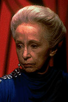
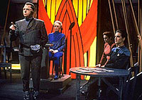

MANCHETE
DO EPISDIO
Deep Space Nine ganha
sua verso de
'The Measure of a Man' com Jadzia Dax
Episdio
anterior | Prximo
episdio
Sinopse:
Data Estelar:
46910.1.

Jadzia
Dax enfrenta acusaes de assassinato referentes ao hospedeiro
anterior do simbionte Dax: Curzon.
Uma audincia de extradio convocada pelo governo Bajoriano
a bordo da Deep Space Nine para decidir se Jadzia
pode ser considerada responsvel pelas aes cometidas por seus
hospedeiros anteriores.
Enquanto isso, Odo inicia uma investigao no planeta natal do
acusador. Por fim, o comissrio consegue encontrar um libi para
Curzon e desvendar o verdadeiro criminoso.
Comentrios:
"Dax" uma verso Deep Space Nine
do episdio "The Measure of a Man", de
A Nova Gerao. Embora no to bem-sucedido
como seu predecessor, o episdio mostra certas qualidades, e
representa o melhor desenvolvimento de Jadzia Dax durante a
primeira temporada.
Em "The Measure of a Man", a discusso
era sobre os direitos de um andride. Dessa vez, o debate gira em
torno da questo da individualidade. Jadzia Dax a mesma pessoa
que Curzon Dax?

O
cenrio da audincia de extradio perante uma juza
Bajoriana foi excelente (embora com execuo um tanto quanto
didtica) para desvendar vrios fatos sobre os Trills, embora
pouco efetivo para desvendar fatos sobre Jadzia em especial.
O estilo de Sisko vem tona mais claramente neste episdio, bem
como um genuno sentimento de preocupao sobre como ser o
relacionamento dele com Jadzia daqui por diante.
O ngulo da investigao magistralmente executado,
fortalecendo o carter profissional de Odo.
Mas o "ouro" do episdio realmente est no
"apagar das luzes", ou seja, na "desmistificao
dos mitos", neste caso aplicada ao General Tandro. Esse
acabar se convertendo em um dos temas recorrentes da srie.
Citaes:
Enina Tandro -
"Live, Jadzia Dax! Live a long, fresh and wonderful
life!"
("Viva, Jadzia Dax! Viva uma longa, nova e maravilhosa
vida!")
Trivia:
 Um dos raros episdios de Jornada nas Estrelas
que termina com um "Fade-Out" (a imagem vai escurecendo
gradualmente).
Um dos raros episdios de Jornada nas Estrelas
que termina com um "Fade-Out" (a imagem vai escurecendo
gradualmente).
Com este episdio, D.C. Fontana tornou-se a primeira pessoa a
escrever para trs sries diferentes de Jornada
(Srie Clssica, A Nova Gerao
e Deep Space Nine, sem falar na Srie
Animada).
Ficha
tcnica:
Histria de Peter Allan
Fields
Roteiro de Peter Allan Fields e D.C.
Fontana
Direo de David Carson
Exibido em 15/02/1993
Produo: 008
Elenco:
Avery Brooks como
Benjamin Lafayette Sisko
Ren Auberjonois como Odo
Nana Visitor como Kira Nerys
Colm Meaney como Miles Edward O'Brien
Siddig El Fadil como Julian Subatoi Bashir
Armin Shimerman como Quark
Terry Farrell como Jadzia Dax
Cirroc Lofton como Jake Sisko
Elenco convidado:
Gregory Itzin como Ilon Tandro
Anne Haney como juza Renora
Richard Lineback como Selin Peers
Fionnula Flanagan como Enina Tandro